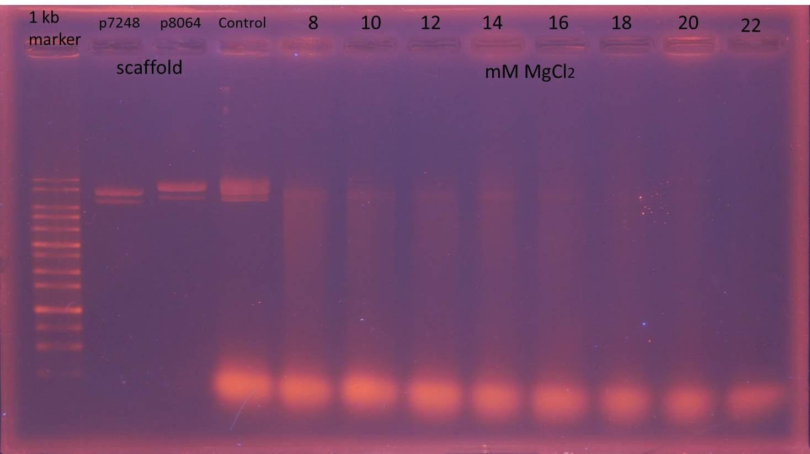

Result
Construction of Plasmid Carrying GFP Genes
Test whether the extracted plasmids from transformed E.coli are correct
Agarose gel electrophoresis of digested plasmids
2. T7-promoter GFP plasmid + EcoRI & PstI
3. 1 kb DNA ladder
4. lacI regulated GFP generator plasmid + EcoRI
5. lacI regulated GFP generator plasmid + EcoRI & PstI
* T7-promoter GFP plasmid stands for pSB1C3 - BBa_I746909 plasmid
* lacI regulated GFP generator plasmid stands for pSB1C3 - BBa_K082034 plasmid
T7-promoter GFP plasmid is 2796 bp and lacI regulated GFP generator plasmid is 3189 bp.
After EcoRI digestion and electrophoresis analysis, the molecular size of T7-promoter GFP plasmid is about 2800 bp and lacI regulated GFP generator plasmid is about 4000 bp.
After EcoRI & PstI digestion and electrophoresis analysis, T7-promoter GFP plasmid is separated into two sequences, 1000 and 2000 bp, and lacI regulated GFP generator plasmid is also separated into two sequences, 1100 and 2000 bp.
The result of EcoRI digestion reveals that the molecular size of lacI regulated GFP generator plasmid is larger than we expect, thus we decide to conduct electrophoresis of digested lacI regulated GFP generator plasmid again.
The result of electrophoresis shows that lacI regulated GFP generator plasmid is still about 4000 bp and doesn’t correspond to the information provided by iGEM, thus we choose T7-promoter-GFP plasmid to be delivered by NanoNeedle.
Find The Best Concentration of Magnesium Ion in The Origami Folding Process -Agarose Gel Electrophoresis
 *Control: the non-folding mixture of scaffolds and staples at 8 mM MgCl2. We use the control to compare the effect of folding reaction.
Since the concentration of magnesium ion affects the structure of DNA origami significantly, in the beginning of experiment we try 8 different concentrations from 8 mM to 22 mM MgCl2 in folding reaction.
The electrophoresis result reveals that after the folding reaction, bands of scaffolds in the mixture of scaffolds and staples at 14, 16 and 18 mM MgCl2 are less obvious than only scaffolds. We considered scaffolds are folded into DNA origami showing bright areas upper bands of scaffolds, therefore we chose 14, 16 and 18 mM MgCl2 for folding reactions of the mixture of scaffolds, staples, and T7-promoter GFP plasmids.
DNA folding reaction
Test whether DNA origami folded wel --agarose gel electrophoresis
 *control: the non-folding mixture of scaffolds, staples with or without T7-promoter GFP plasmids at 8 mM MgCl2. We use the control to test the effect of folding reaction.
*control: the non-folding mixture of scaffolds, staples with or without T7-promoter GFP plasmids at 8 mM MgCl2. We use the control to test the effect of folding reaction.
The electrophoresis result of mixture with plasmids reveals that after the folding reaction, all bands of mixture are less obvious than only scaffolds and plasmids. In addition, there are bright areas upper bands of scaffolds in mixture at 16 and 18 mM MgCl2. Therefore we consider 16 mM MgCl2 is the best concentration for the folding reaction and choose 16 mM MgCl2 for further folding reactions in the functional test.
Functional Test
Test whether Nano Needle successfully binds to cell wall of E. coli, penetrates its membrane and delivers T7-promoter plasmid into it.
We incubate E. coli with 7 combinations of origami components to test the function of NanoNeedle.
- T7-promoter GFP plasmid transformed E. coli is positive control
- without origami component (only folding buffer and MgCl2)
- with T7-promoter GFP plasmid only
- with non-T7-promoter GFP plasmid origami
- with non-folding origami components
- with origami in LB broth
- with origami in LB broth (Cp+)
(T7-promoter GFP plasmid carries chloramphenicol-resistance gene. Only E. coli acquiring plasmid from NanoNeedle can live in LB broth containing chloramphenicol)